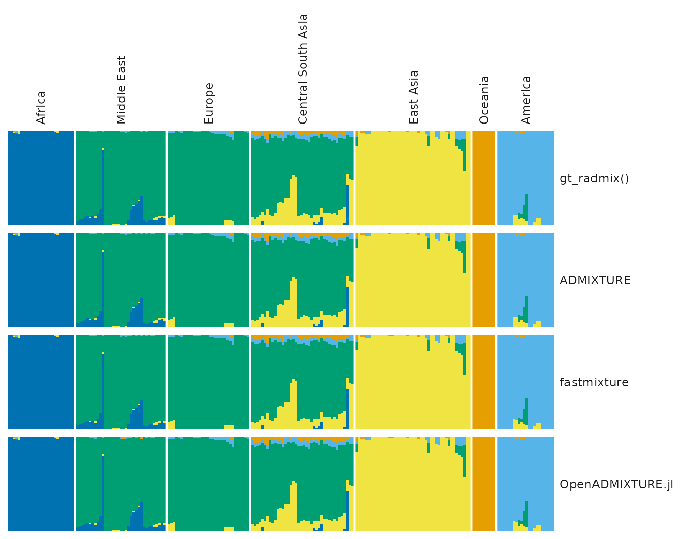
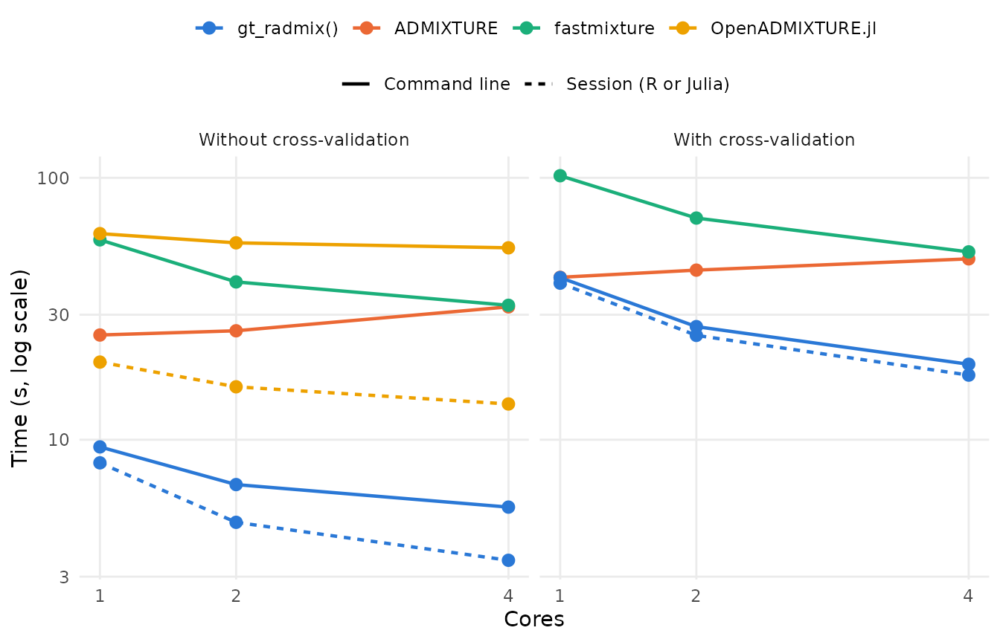

admixture_benchmark.RmdNote: the results shown in this article are, for now, those of a small subset of the data (see The data), run on a laptop with 4 cores, to check the benchmark. They will be replaced by those of the full benchmark.
gt_radmix() estimates ancestry proportions with the
method of ADMIXTURE (Alexander et al. 2009), directly from the backing
file of a gen_tibble. It uses a modified version of the
algorithm of OpenADMIXTURE (Ko et al. 2023), whose C++ code was
initially ported from OpenADMIXTURE.jl, and subsequently modified and
optimised for performance whilst keeping the same outputs. We also
implemented the cross-validation of ADMIXTURE, which is not part of
OpenADMIXTURE. This article compares gt_radmix() with three
programs that fit the same model: ADMIXTURE itself, fastmixture
(Santander et al. 2024), and OpenADMIXTURE.jl, the Julia implementation
of OpenADMIXTURE (without its selection of ancestry informative
markers). The comparison uses the Human Genome Diversity Project (HGDP).
It checks that the programs find the same ancestry proportions, and
measures how long each takes on different numbers of cores, with and
without cross-validation (which OpenADMIXTURE.jl does not have).
All the programs are timed from the command line, each run being a
new process that starts the program, reads the data and saves the
results. gt_radmix() is also timed in an R session, and
OpenADMIXTURE.jl in a Julia session, in which the package is already
loaded (see How long do they
take?).
The results come first. The second part, How the benchmark was run, describes the data and the runs, with their code, and how to run the benchmark again.
The four programs estimated the ancestry proportions of 209 individuals of the HGDP, typed at 25,000 loci, for K = 5 ancestral populations (see The data):
gt_radmix() took 9.39 s, ADMIXTURE 25.1 s, fastmixture 58 s
and OpenADMIXTURE.jl 61.2 s; on 4 cores, they took 5.53 s, 32.2 s, 32.6
s and 54 s.tidygenclust took about 1.95 s
of the time of gt_radmix() from the command line. Starting
Julia, loading OpenADMIXTURE.jl and compiling its code took about 40.5
s: in a Julia session in which OpenADMIXTURE.jl has already been used,
its fit took 19.8 s on 1 core.gt_radmix() differs by 0.016, that of
fastmixture by -0.048, and that of OpenADMIXTURE.jl by 0.072. Their
ancestry proportions differ from those of ADMIXTURE by up to 0.00013,
0.0024 and 0.00054 respectively.gt_radmix() gives identical ancestry proportions, ADMIXTURE
identical ancestry proportions, fastmixture ancestry proportions that
differ by up to 0.00037, and OpenADMIXTURE.jl (without cross-validation)
identical ancestry proportions.All the programs maximise the same likelihood, but each starts from its own random values and stops according to its own convergence criterion. Each run is compared with ADMIXTURE on 1 core without cross-validation, after matching its clusters to those of ADMIXTURE:
| Program | Cores | CV | Log-likelihood | Difference | Largest difference (same program) | RMSE (ADMIXTURE) | Largest difference (ADMIXTURE) |
|---|---|---|---|---|---|---|---|
| gt_radmix() (command line) | 1 | no | -3,872,985.24 | 0.016 | 0 | 0.000024 | 0.00013 |
| gt_radmix() (command line) | 1 | yes | -3,872,985.24 | 0.016 | 0 | 0.000024 | 0.00013 |
| gt_radmix() (command line) | 2 | no | -3,872,985.24 | 0.016 | 0 | 0.000024 | 0.00013 |
| gt_radmix() (command line) | 2 | yes | -3,872,985.24 | 0.016 | 0 | 0.000024 | 0.00013 |
| gt_radmix() (command line) | 4 | no | -3,872,985.24 | 0.016 | 0 | 0.000024 | 0.00013 |
| gt_radmix() (command line) | 4 | yes | -3,872,985.24 | 0.016 | 0 | 0.000024 | 0.00013 |
| gt_radmix() (R session) | 1 | no | -3,872,985.24 | 0.016 | 0 | 0.000024 | 0.00013 |
| gt_radmix() (R session) | 1 | yes | -3,872,985.24 | 0.016 | 0 | 0.000024 | 0.00013 |
| gt_radmix() (R session) | 2 | no | -3,872,985.24 | 0.016 | 0 | 0.000024 | 0.00013 |
| gt_radmix() (R session) | 2 | yes | -3,872,985.24 | 0.016 | 0 | 0.000024 | 0.00013 |
| gt_radmix() (R session) | 4 | no | -3,872,985.24 | 0.016 | 0 | 0.000024 | 0.00013 |
| gt_radmix() (R session) | 4 | yes | -3,872,985.24 | 0.016 | 0 | 0.000024 | 0.00013 |
| ADMIXTURE | 1 | no | -3,872,985.25 | 0 | 0 | 0 | 0 |
| ADMIXTURE | 1 | yes | -3,872,985.25 | 0 | 0 | 0 | 0 |
| ADMIXTURE | 2 | no | -3,872,985.25 | 0 | 0 | 0 | 0 |
| ADMIXTURE | 2 | yes | -3,872,985.25 | 0 | 0 | 0 | 0 |
| ADMIXTURE | 4 | no | -3,872,985.25 | 0 | 0 | 0 | 0 |
| ADMIXTURE | 4 | yes | -3,872,985.25 | 0 | 0 | 0 | 0 |
| fastmixture | 1 | no | -3,872,985.30 | -0.048 | 0 | 0.00024 | 0.0024 |
| fastmixture | 1 | yes | -3,872,985.30 | -0.048 | 0 | 0.00024 | 0.0024 |
| fastmixture | 2 | no | -3,872,985.30 | -0.048 | 0.00015 | 0.00025 | 0.0024 |
| fastmixture | 2 | yes | -3,872,985.30 | -0.048 | 0.00036 | 0.00022 | 0.0021 |
| fastmixture | 4 | no | -3,872,985.30 | -0.048 | 0.00037 | 0.00021 | 0.0021 |
| fastmixture | 4 | yes | -3,872,985.30 | -0.048 | 0.00015 | 0.00023 | 0.0023 |
| OpenADMIXTURE.jl (command line) | 1 | no | -3,872,985.18 | 0.072 | 0 | 0.00012 | 0.00054 |
| OpenADMIXTURE.jl (command line) | 2 | no | -3,872,985.18 | 0.072 | 0 | 0.00012 | 0.00054 |
| OpenADMIXTURE.jl (command line) | 4 | no | -3,872,985.18 | 0.072 | 0 | 0.00012 | 0.00054 |
| OpenADMIXTURE.jl (Julia session) | 1 | no | -3,872,985.18 | 0.072 | 0 | 0.00012 | 0.00054 |
| OpenADMIXTURE.jl (Julia session) | 2 | no | -3,872,985.18 | 0.072 | 0 | 0.00012 | 0.00054 |
| OpenADMIXTURE.jl (Julia session) | 4 | no | -3,872,985.18 | 0.072 | 0 | 0.00012 | 0.00054 |
Each program was run once for each number of cores, from a single random start (with seed 1, but each program draws its own random values), so a run can end at another local optimum of the likelihood, with a lower log-likelihood and different ancestry proportions. Here, all the runs reached the log-likelihood of ADMIXTURE, to within 1.
The ancestry proportions from each program (on 1 core, without
cross-validation, and in a session for gt_radmix() and
OpenADMIXTURE.jl), with the individuals grouped by region and
population:

The times of ADMIXTURE and fastmixture are those of runs from the
command line: each run is a new process, which starts the program, reads
the bed file and writes the estimates of Q and P to text files.
gt_radmix() and OpenADMIXTURE.jl are timed in the same way,
with Rscript and julia (command line), and
also in a session, where R or Julia is already running with the package
loaded:
gt_radmix(), the time of reading the bed file into
a gen_tibble (and its backing file), running
gt_radmix(), and saving the resulting gt_admix
object, with Q and P, to an RDS file. In an analysis with several values
of K, or several runs, the gen_tibble would only be read
once;
| Program | Cores | Time (s) | Speed-up | Time with CV (s) | Speed-up with CV |
|---|---|---|---|---|---|
| gt_radmix() (command line) | 1 | 9.39 | 1.0 | 41.6 | 1.0 |
| gt_radmix() (command line) | 2 | 6.74 | 1.4 | 27 | 1.5 |
| gt_radmix() (command line) | 4 | 5.53 | 1.7 | 19.4 | 2.1 |
| gt_radmix() (R session) | 1 | 8.16 | 1.0 | 39.6 | 1.0 |
| gt_radmix() (R session) | 2 | 4.84 | 1.7 | 25 | 1.6 |
| gt_radmix() (R session) | 4 | 3.46 | 2.4 | 17.6 | 2.2 |
| ADMIXTURE | 1 | 25.1 | 1.0 | 41.7 | 1.0 |
| ADMIXTURE | 2 | 26.1 | 1.0 | 44.4 | 0.9 |
| ADMIXTURE | 4 | 32.2 | 0.8 | 49 | 0.9 |
| fastmixture | 1 | 58 | 1.0 | 102 | 1.0 |
| fastmixture | 2 | 40 | 1.4 | 70.2 | 1.5 |
| fastmixture | 4 | 32.6 | 1.8 | 52.1 | 2.0 |
| OpenADMIXTURE.jl (command line) | 1 | 61.2 | 1.0 | - | - |
| OpenADMIXTURE.jl (command line) | 2 | 56.4 | 1.1 | - | - |
| OpenADMIXTURE.jl (command line) | 4 | 54 | 1.1 | - | - |
| OpenADMIXTURE.jl (Julia session) | 1 | 19.8 | 1.0 | - | - |
| OpenADMIXTURE.jl (Julia session) | 2 | 15.9 | 1.2 | - | - |
| OpenADMIXTURE.jl (Julia session) | 4 | 13.7 | 1.4 | - | - |
Starting R and loading tidygenclust adds about 1.95 s to
each run of gt_radmix() from the command line. Starting
Julia, loading OpenADMIXTURE.jl and compiling its code adds about 40.5 s
to each run of OpenADMIXTURE.jl (these are the median differences
between the runs from the command line and in a session).
| Program | 1 core | 2 cores | 4 cores |
|---|---|---|---|
| gt_radmix() (command line) | 0.44439 | 0.44439 | 0.44439 |
| gt_radmix() (R session) | 0.44439 | 0.44439 | 0.44439 |
| ADMIXTURE | 0.44610 | 0.44610 | 0.44610 |
| fastmixture | 0.43348 | 0.43348 | 0.43348 |
OpenADMIXTURE.jl has no cross-validation: we implemented in
gt_radmix() that of ADMIXTURE. ADMIXTURE and
gt_radmix() compute the same cross-validation error
(Alexander and Lange 2011): they hold out a fold of the genotypes, refit
the model on the others, and average the deviance of the held-out
genotypes. They draw the folds differently, so their errors are close
but not identical. fastmixture averages the same deviance, but holds out
a fold of the individuals rather than of the genotypes. The allele
frequencies come from the other individuals, but the ancestry of the
held-out individuals is estimated from their own genotypes, the same
genotypes on which the error is then computed. Its errors can be
compared between values of K, but not with those of the other two
programs.
The benchmark is run with scripts in
vignettes/articles/code (in the source code of the
package). The first prepares the data. The second runs the programs from
the command line: ADMIXTURE, fastmixture, and gt_radmix()
and OpenADMIXTURE.jl with two more scripts, which Rscript
and julia run. The last runs gt_radmix() in an
R session. The results are read here from
vignettes/articles/data/admixture_benchmark. Each run is
done once, as the full runs take long enough for the variation between
repeated runs to be small. The code shown below is taken from these
scripts. Timings depend on the machine (see Machine and software), but the
differences between the programs should be similar on other
machines.
The data are those of the HGDP used in the benchmark of
tidypopgen (1043 individuals typed at about 650,000 loci),
downloaded from Zenodo:
# the HGDP data (1043 individuals typed at about 650k loci) and the
# population of each individual, as used in the benchmark of tidypopgen.
# Each file is downloaded under a temporary name, so that an interrupted
# download is not mistaken for a complete file when the script is run again
zenodo_url <- "https://zenodo.org/records/15582364/files/"
hgdp_files <- c(
"hgdp650.qc.hg19.bed", "hgdp650.qc.hg19.bim", "hgdp650.qc.hg19.fam",
"hgdp650_id_pop.txt"
)
options(timeout = max(3600, getOption("timeout")))
for (file in hgdp_files) {
path <- file.path(hgdp_dir, file)
if (!file.exists(path)) {
download.file(paste0(zenodo_url, file), paste0(path, ".part"), mode = "wb")
file.rename(paste0(path, ".part"), path)
}
}and prepared as recommended in the manual of ADMIXTURE. The steps are
the same as in the analyses of the HGDP with
tidygenclust:
library(tidypopgen)
hgdp <- gen_tibble(
file.path(hgdp_dir, "hgdp650.qc.hg19.bed"),
backingfile = file.path(gt_dir, "hgdp_raw"),
quiet = TRUE
)
# loci with less than 5% of missing genotypes, as recommended in the manual
# of ADMIXTURE, and polymorphic (fastmixture stops on monomorphic loci)
hgdp <- hgdp |>
select_loci_if(loci_missingness(genotypes) < 0.05) |>
select_loci_if(loci_maf(genotypes) > 0)
# LD clumping with the thresholds of the manual of ADMIXTURE (plink
# --indep-pairwise 50 10 0.1). Clumping needs complete genotypes, so the
# missing ones are imputed first (on a backing file with only the loci kept
# above). loci_ld_clump() uses the imputed genotypes, but the gen_tibble
# keeps using the raw ones, which are those written to the bed file below:
# missing genotypes remain missing for all the tools
hgdp <- gt_update_backingfile(
hgdp,
backingfile = file.path(gt_dir, "hgdp_filtered"),
quiet = TRUE
)
set.seed(1)
hgdp <- gt_impute_simple(hgdp, method = "random")
hgdp <- hgdp |>
select_loci_if(
loci_ld_clump(genotypes, thr_r2 = 0.1, size = 50, use_positions = FALSE)
)
gt_as_plink(hgdp, file = file.path(hgdp_dir, "hgdp_bench.bed"))All the programs are run on this bed file. A small subset of it is also saved, to check the scripts quickly (see Running the benchmark again):
# a small subset to check the benchmark scripts (on which ADMIXTURE takes
# about 30 s on one core): every 5th individual, and 25,000 of the loci that
# are still polymorphic among them
hgdp_quick <- hgdp[seq(1, nrow(hgdp), by = 5), ] |>
select_loci_if(loci_maf(genotypes) > 0)
n_loci <- count_loci(hgdp_quick)
set.seed(2)
quick_loci <- seq_len(n_loci) %in% sample(n_loci, min(25000, n_loci))
hgdp_quick <- select_loci_if(hgdp_quick, quick_loci)
gt_as_plink(hgdp_quick, file = file.path(hgdp_dir, "hgdp_bench_quick.bed"))All the programs are run from the command line with the same settings:
Each program is run on 1, 2 and 4 cores (with -j in
ADMIXTURE, --threads in fastmixture, n_cores
in gt_radmix() and the number of threads of Julia for
OpenADMIXTURE.jl), with and without cross-validation (with
--cv in ADMIXTURE and fastmixture, and
crossval in gt_radmix(); OpenADMIXTURE.jl has
none), with these functions:
# the wall-clock time, in seconds
now() { date +%s.%N; }
# the first match of a regular expression (with one group, which is
# returned) at the start of a line of a log, or NA if there is none
extract() {
local value
value=$(sed -n -E "s/$1/\1/p" "$2" | head -n 1)
echo "${value:-NA}"
}
# ADMIXTURE writes its output in the current directory, named after the bed
# file (e.g. hgdp_bench.5.Q), so it is run from the directory of the run;
# its log is what it prints
run_admixture() {
local n_cores=$1 crossval=$2 run_dir=$3
local bed_path=$PWD/$bed
local args=(-s "$seed" -j"$n_cores")
if [[ $crossval == TRUE ]]; then
args+=(--cv="$n_folds")
fi
(cd "$run_dir" && "$admixture" "${args[@]}" "$bed_path" "$k" > admixture.log 2>&1)
}
# fastmixture writes its output (Q, P and a log with its settings and
# results) with the prefix given by --out, and prints its progress
run_fastmixture() {
local n_cores=$1 crossval=$2 run_dir=$3
local args=(
--bfile "${bed%.bed}" --K "$k" --threads "$n_cores" --seed "$seed"
--out "$run_dir/fastmixture"
)
if [[ $crossval == TRUE ]]; then
args+=(--cv "$n_folds")
fi
"$fastmixture" "${args[@]}" > "$run_dir/console.log" 2>&1
}
# gt_radmix() is run by a new R process, which loads tidygenclust, reads the
# bed file into a gen_tibble, runs gt_radmix(), saves the results, and
# prints the log-likelihood and cross-validation error
run_radmix_cli() {
local n_cores=$1 crossval=$2 run_dir=$3
"$rscript" code/admixture_benchmark_radmix_cli.R "$bed" "$k" "$seed" \
"$n_cores" "$crossval" "$n_folds" "$run_dir" > "$run_dir/console.log" 2>&1
}
# julia, with the variables that activating its conda environment would
# set, so that it finds the packages installed in it (without the time
# taken by conda run)
julia_run() {
env JULIA_DEPOT_PATH="$julia_prefix/share/julia:" \
JULIA_PROJECT="@$julia_env" JULIA_LOAD_PATH="@:@$julia_env:@stdlib" \
"$julia_prefix/bin/julia" "$@"
}
# OpenADMIXTURE.jl is run by a new Julia process, which writes Q and P with
# the prefix openadmixture, and prints its progress, the log-likelihood and
# the time of the fit (Julia is started without an interactive thread, see
# admixture_benchmark_openadmixture.jl); it has no cross-validation
run_openadmixture_cli() {
local n_cores=$1 run_dir=$3
julia_run --threads="$n_cores,0" code/admixture_benchmark_openadmixture.jl \
"$bed" "$k" "$seed" "$run_dir/openadmixture" > "$run_dir/console.log" 2>&1
}
# the same, after a warm-up on the small subset of the data, so that the
# fit, timed in Julia, does not include compiling the code
run_openadmixture() {
local n_cores=$1 run_dir=$3
julia_run --threads="$n_cores,0" code/admixture_benchmark_openadmixture.jl \
"$bed" "$k" "$seed" "$run_dir/openadmixture" "$warmup_bed" \
> "$run_dir/console.log" 2>&1
}and the time, Q matrix, log-likelihood, cross-validation error and number of iterations of each run are saved:
# each combination of program, number of cores and cross-validation (or
# not) is run once, in its own directory; the time includes starting the
# program, reading the data and saving the results. OpenADMIXTURE.jl, which
# has no cross-validation, is run without it, both from the command line
# (openadmixture_cli) and after a warm-up (openadmixture, timed in Julia).
# The Q matrix and log of each run are then copied to the results, and its
# log-likelihood, cross-validation error and number of iterations are
# extracted from its log
mkdir -p "$out_dir/Q" "$out_dir/logs"
timings=$out_dir/timings_cli.csv
echo "tool,n_cores,crossval,seconds,loglik,cv_error,iterations" > "$timings"
for tool in admixture fastmixture radmix_cli openadmixture_cli openadmixture; do
for n_cores in "${cores[@]}"; do
for crossval in FALSE TRUE; do
if [[ $crossval == TRUE && $tool == openadmixture* ]]; then
continue
fi
if [[ $crossval == TRUE ]]; then
run=${tool}_t${n_cores}_cv
else
run=${tool}_t${n_cores}_nocv
fi
run_dir=$runs_dir/$run
rm -rf "$run_dir"
mkdir -p "$run_dir"
echo "Running $run"
start=$(now)
"run_$tool" "$n_cores" "$crossval" "$run_dir"
seconds=$(awk -v start="$start" -v end="$(now)" \
'BEGIN { printf "%.3f", end - start }')
iterations_pattern='^Converged in ([0-9]+) iterations.*'
case $tool in
admixture)
q_file=$run_dir/$(basename "$bed" .bed).$k.Q
log_file=$run_dir/admixture.log
loglik=$(extract '^Loglikelihood: ([^[:space:]]+).*' "$log_file")
cv_error=$(extract \
'^CV error \(K=[0-9]+\): ([^[:space:]]+).*' "$log_file")
;;
fastmixture)
q_file=$run_dir/fastmixture.K$k.s$seed.Q
log_file=$run_dir/fastmixture.K$k.s$seed.log
loglik=$(extract \
'^Final log-likelihood: ([^[:space:]]+).*' "$log_file")
cv_error=$(extract \
'^Cross-validation error \(SD\): ([^[:space:]]+).*' "$log_file")
;;
radmix_cli)
q_file=$run_dir/radmix.Q
log_file=$run_dir/radmix.log
loglik=$(extract '^Loglikelihood: ([^[:space:]]+).*' \
"$run_dir/console.log")
cv_error=$(extract '^CV error \(K=[0-9]+\): ([^[:space:]]+).*' \
"$run_dir/console.log")
;;
openadmixture*)
q_file=$run_dir/openadmixture.Q
log_file=$run_dir/console.log
loglik=$(extract '^Loglikelihood: ([^[:space:]]+).*' "$log_file")
cv_error=NA
iterations_pattern='^Main algorithm converged in ([0-9]+) iterations.*'
if [[ $tool == openadmixture ]]; then
# after the warm-up, the time of the fit alone
seconds=$(extract '^Fit time \(s\): ([^[:space:]]+).*' "$log_file")
fi
;;
esac
iterations=$(extract "$iterations_pattern" "$log_file")
cp "$q_file" "$out_dir/Q/$run.Q"
cp "$log_file" "$out_dir/logs/$run.log"
echo "$tool,$n_cores,$crossval,$seconds,$loglik,$cv_error,$iterations" \
>> "$timings"
done
done
doneFrom the command line, gt_radmix() is run by this R
script (with Rscript), which reads the same bed file into a
gen_tibble, runs gt_radmix(), and saves the
result to an RDS file:
args <- commandArgs(trailingOnly = TRUE)
bed_file <- args[1]
k <- as.integer(args[2])
seed <- as.integer(args[3])
n_cores <- as.integer(args[4])
crossval <- as.logical(args[5])
n_folds <- as.integer(args[6])
run_dir <- args[7]
library(tidygenclust)
bigparallelr::set_blas_ncores(1)
hgdp <- tidypopgen::gen_tibble(
bed_file,
backingfile = file.path(run_dir, "hgdp_bench"),
quiet = TRUE
)
fit <- gt_radmix(
hgdp,
k = k,
seed = seed,
crossval = crossval,
n_folds = n_folds,
n_cores = n_cores
)
saveRDS(fit, file.path(run_dir, "radmix.rds"))
# the Q matrix (one row per individual, with 6 decimals, as ADMIXTURE writes
# it) and the log
q <- fit$Q[[1]]
write.table(
matrix(sprintf("%.6f", q), nrow = nrow(q)),
file.path(run_dir, "radmix.Q"),
quote = FALSE,
row.names = FALSE,
col.names = FALSE
)
writeLines(fit$log[[1]], file.path(run_dir, "radmix.log"))
cat(sprintf("Loglikelihood: %.6f\n", fit$loglik))
if (crossval) {
cat(sprintf("CV error (K=%d): %.6f\n", k, fit$cv))
}and OpenADMIXTURE.jl by this Julia script (with julia),
which runs it on all the loci, without its selection of ancestry
informative markers, with its default settings, which are those of
gt_radmix():
using OpenADMIXTURE, Printf, Random
bed, k, seed, prefix = ARGS[1], parse(Int, ARGS[2]), parse(Int, ARGS[3]), ARGS[4]
warmup = length(ARGS) >= 5 ? ARGS[5] : nothing
# a matrix written with one row per line, as ADMIXTURE writes its Q and P
# matrices (6 decimals)
function write_matrix(file, m)
open(file, "w") do io
for i in axes(m, 1)
println(io, join([@sprintf("%.6f", x) for x in m[i, :]], " "))
end
end
end
if warmup !== nothing
OpenADMIXTURE.run_admixture(warmup, k; rng=Xoshiro(seed), admix_n_iter=1,
progress_bar=false)
end
seconds = @elapsed begin
# sparsity = nothing (the default): all the loci are used
d, _, _ = OpenADMIXTURE.run_admixture(bed, k; rng=Xoshiro(seed), progress_bar=false)
# d.q and d.p have one column per individual and per locus
write_matrix(prefix * ".Q", permutedims(d.q))
write_matrix(prefix * ".P", permutedims(d.p))
end
println("Loglikelihood: ", @sprintf("%.6f", d.ll_new))
println("Fit time (s): ", @sprintf("%.3f", seconds))gt_radmix() runs on a gen_tibble. Its
parallel loops use OpenMP, with n_cores threads. It only
calls BLAS for small systems of K equations, so BLAS is kept to a single
thread:
library(tidygenclust)
# gt_radmix() runs in parallel with OpenMP (with n_cores threads), and
# only uses BLAS for small (k x k) systems: BLAS is kept to a single thread,
# so that a multithreaded BLAS does not use more cores than requested
bigparallelr::set_blas_ncores(1)It is run with the same settings as the other programs:
# the same settings as in admixture_benchmark_cli.sh
k <- 5
seed <- 1
n_folds <- 5
cores <- c(1, 2, 4)Each run reads the same bed file into a gen_tibble, runs
gt_radmix(), and saves the result to an RDS file:
# the Q matrices are written as ADMIXTURE and fastmixture write theirs (one
# row per individual, with 6 decimals)
write_q <- function(q, file) {
q_text <- matrix(sprintf("%.6f", q), nrow = nrow(q))
write.table(q_text, file, quote = FALSE, row.names = FALSE, col.names = FALSE)
}
# each combination of number of cores and cross-validation (or not) is run
# once, in its own directory. As ADMIXTURE and fastmixture read the bed file
# and write their estimates, the time of each run includes reading the bed
# file into a gen_tibble (with its backing file in the directory of the
# run), and saving the gt_admix object (with Q and P) to an RDS file. Its Q
# matrix and log are then saved with the results, and its log-likelihood,
# cross-validation error and number of iterations are recorded
timings <- list()
for (n_cores in cores) {
for (crossval in c(FALSE, TRUE)) {
run <- paste0("radmix_t", n_cores, if (crossval) "_cv" else "_nocv")
run_dir <- file.path(runs_dir, run)
unlink(run_dir, recursive = TRUE)
dir.create(run_dir, recursive = TRUE)
message("Running ", run)
start <- proc.time()[["elapsed"]]
hgdp <- tidypopgen::gen_tibble(
bed_file,
backingfile = file.path(run_dir, "hgdp_bench"),
quiet = TRUE
)
fit <- gt_radmix(
hgdp,
k = k,
seed = seed,
crossval = crossval,
n_folds = n_folds,
n_cores = n_cores
)
saveRDS(fit, file.path(run_dir, "radmix.rds"))
seconds <- proc.time()[["elapsed"]] - start
write_q(fit$Q[[1]], file.path(out_dir, "Q", paste0(run, ".Q")))
writeLines(fit$log[[1]], file.path(out_dir, "logs", paste0(run, ".log")))
converged_line <- grep("^Converged in", fit$log[[1]], value = TRUE)[1]
timings[[run]] <- data.frame(
tool = "radmix",
n_cores = n_cores,
crossval = crossval,
seconds = seconds,
loglik = fit$loglik,
cv_error = if (crossval) fit$cv else NA,
iterations = as.integer(
sub("^Converged in ([0-9]+) iterations.*", "\\1", converged_line)
)
)
}
}
timings <- do.call(rbind, timings)Each program stops when its own default convergence criterion is met.
ADMIXTURE stops when the log-likelihood increases by less than 1e-4
between iterations. fastmixture checks every 5 iterations, and stops
when the log-likelihood, divided by the number of observed genotypes,
has increased by less than 1e-9. gt_radmix() and
OpenADMIXTURE.jl stop when the relative change in the log-likelihood is
less than 1e-7. The numbers of iterations are not comparable either. An
iteration of fastmixture is a pass of accelerated EM updates, first over
mini-batches of the loci. An iteration of ADMIXTURE,
gt_radmix() and OpenADMIXTURE.jl updates all the parameters
with block-wise Newton steps.
The results are read, and the Q matrices aligned and compared, with this code:
# to summarise and plot the results
library(dplyr)
library(tidyr)
library(ggplot2)
# each program, and how it is run (from the command line, or in an R or
# Julia session), in the order of the tables and plots
tool_labels <- c(
radmix_cli = "gt_radmix() (command line)",
radmix = "gt_radmix() (R session)",
admixture = "ADMIXTURE",
fastmixture = "fastmixture",
openadmixture_cli = "OpenADMIXTURE.jl (command line)",
openadmixture = "OpenADMIXTURE.jl (Julia session)"
)
# the program of each of them
tool_program <- c(
radmix_cli = "radmix", radmix = "radmix", admixture = "admixture",
fastmixture = "fastmixture", openadmixture_cli = "openadmixture",
openadmixture = "openadmixture"
)
program_labels <- c(
radmix = "gt_radmix()",
admixture = "ADMIXTURE",
fastmixture = "fastmixture",
openadmixture = "OpenADMIXTURE.jl"
)
# one row per run, with its time, log-likelihood, cross-validation error
# and number of iterations, and the name of the files of its Q matrix and
# log (e.g. admixture_t4_cv for ADMIXTURE on 4 cores with cross-validation)
timings <- bind_rows(
read.csv(file.path(results_dir, "timings_cli.csv")),
read.csv(file.path(results_dir, "timings_radmix.csv"))
) %>%
mutate(
run = paste0(tool, "_t", n_cores, if_else(crossval, "_cv", "_nocv")),
tool = factor(tool, names(tool_labels))
)
# the machine and software, and the size of the data
session_cli <- read.csv(file.path(results_dir, "session_cli.csv"))
session_r <- read.csv(file.path(results_dir, "session_r.csv"))
session_value <- function(session, item) session$value[session$item == item]
n_indiv <- as.integer(session_value(session_cli, "individuals"))
# the numbers of cores, e.g. "1, 2 and 4"
cores_text <- knitr::combine_words(
sort(unique(timings$n_cores)),
oxford_comma = FALSE
)
n_loci <- as.integer(session_value(session_cli, "loci"))
# the population and region of the individual of each row of the Q matrices
individuals <- read.csv(file.path(results_dir, "individuals.csv"))
# the Q matrix of a run
read_q <- function(run) {
as.matrix(read.table(file.path(results_dir, "Q", paste0(run, ".Q"))))
}
# all the permutations of 1:n, one per row
permutations <- function(n) {
if (n == 1) {
return(matrix(1L))
}
smaller <- permutations(n - 1)
do.call(rbind, lapply(seq_len(n), function(first) {
others <- setdiff(seq_len(n), first)
cbind(first, matrix(others[smaller], ncol = n - 1))
}))
}
# the clusters of different runs are numbered arbitrarily, so the columns of
# a Q matrix are reordered to best match those of a reference (with the
# smallest sum of squared differences, trying all the permutations)
align_q <- function(q, reference) {
perms <- permutations(ncol(q))
ssd <- apply(perms, 1, function(perm) sum((q[, perm] - reference)^2))
unname(q[, perms[which.min(ssd), ]])
}
# the reference: ADMIXTURE on the fewest cores, without cross-validation
min_cores <- min(timings$n_cores)
max_cores <- max(timings$n_cores)
reference_run <- paste0("admixture_t", min_cores, "_nocv")
q_ref <- read_q(reference_run)
k <- ncol(q_ref)
# the Q matrix of each run, with its clusters in the order of the reference
q_aligned <- lapply(
setNames(timings$run, timings$run),
function(run) align_q(read_q(run), q_ref)
)
max_diff <- function(a, b) max(abs(a - b))
rmse <- function(a, b) sqrt(mean((a - b)^2))
# for each run, the difference in log-likelihood from the reference, the
# largest difference in the ancestry proportions from the run of the same
# program on the fewest cores without cross-validation, and the RMSE and
# largest difference from the reference
agreement <- timings %>%
mutate(
own_run = paste0(tool, "_t", min_cores, "_nocv"),
loglik_diff = loglik - loglik[run == reference_run],
diff_own = mapply(
function(run, own_run) max_diff(q_aligned[[run]], q_aligned[[own_run]]),
run, own_run
),
rmse_ref = vapply(run, function(r) rmse(q_aligned[[r]], q_ref), 0),
diff_ref = vapply(run, function(r) max_diff(q_aligned[[r]], q_ref), 0)
)To run the benchmark again (e.g. after changing
tidygenclust, or on another machine), install
tidygenclust with R CMD INSTALL, rather than
loading it with devtools::load_all(), which compiles its
C++ code without optimisation. Also install ADMIXTURE and fastmixture,
e.g. in the conda environment created by
tgc_tools_install(), and OpenADMIXTURE.jl, in the conda
environment created (from the root of the package) by:
Then run, from vignettes/articles, on an otherwise idle
machine with at least 4 cores (the largest number of cores tested, set
by cores in the scripts):
cd vignettes/articles
Rscript code/admixture_benchmark_data.R
conda activate ctidygenclust
bash code/admixture_benchmark_cli.sh
Rscript code/admixture_benchmark_radmix.RThe first script downloads and prepares the data in
data/hgdp, which is not part of the repository, and only
needs to be run once. The other two overwrite the results in
data/admixture_benchmark; then render this article again.
With the argument quick, the last two scripts run
everything on the small subset of the data, to check them in less time.
They then save their results in
data/admixture_benchmark_quick, which this article can be
rendered on with:
| date | 2026-10-31 |
| CPU | Intel(R) Core(TM) i7-10510U CPU @ 1.80GHz |
| cores | 4 |
| RAM | 15 GB |
| ADMIXTURE | 1.3.0 |
| fastmixture | 1.3.0 |
| Julia | 1.12.7 |
| OpenADMIXTURE.jl | 0.1.0 (401ac5c4056f0f6f2a7ea6ffc3af69c2b1e56fdc) |
| R | R version 4.6.1 (2026-06-24) |
| BLAS | /usr/lib/x86_64-linux-gnu/openblas-pthread/libblas.so.3 |
| tidygenclust | 0.1.5.9003 |
| tidypopgen | 0.4.4.9008 |
Alexander, D. H., Novembre, J. & Lange, K. (2009). Fast model-based estimation of ancestry in unrelated individuals. Genome Research, 19, 1655-1664.
Alexander, D. H. & Lange, K. (2011). Enhancements to the ADMIXTURE algorithm for individual ancestry estimation. BMC Bioinformatics, 12, 246.
Ko, S., Chu, B. B., Peterson, D., Okenwa, C., Papp, J. C., Alexander, D. H., Sobel, E. M., Zhou, H. & Lange, K. L. (2023). Unsupervised discovery of ancestry-informative markers and genetic admixture proportions in biobank-scale datasets. The American Journal of Human Genetics, 110, 314-325.
Santander, C. G., Refoyo Martinez, A. & Meisner, J. (2024). Faster model-based estimation of ancestry proportions. Peer Community Journal, 4, e115.